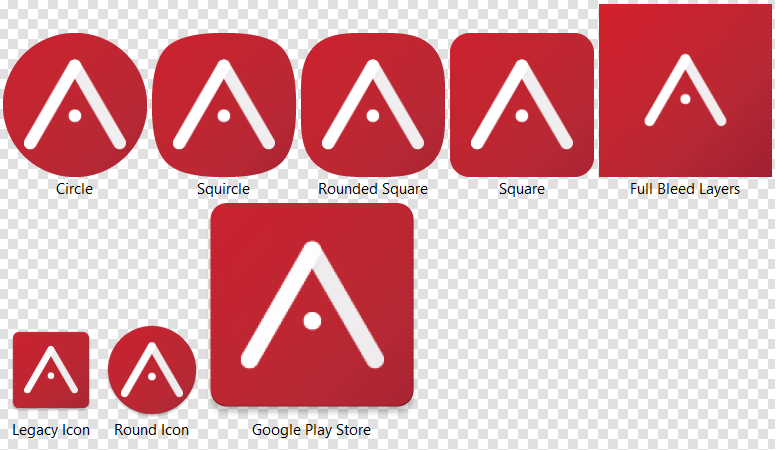
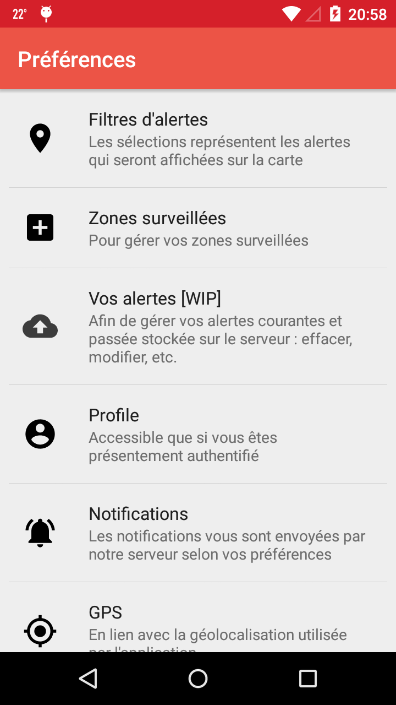
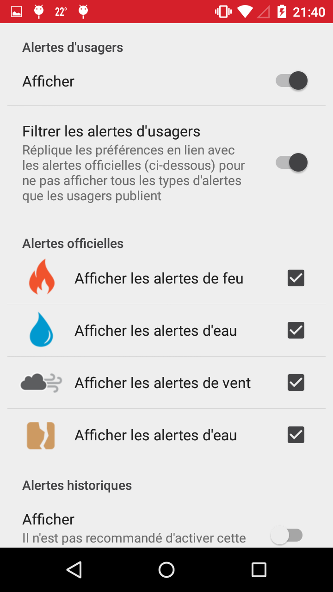
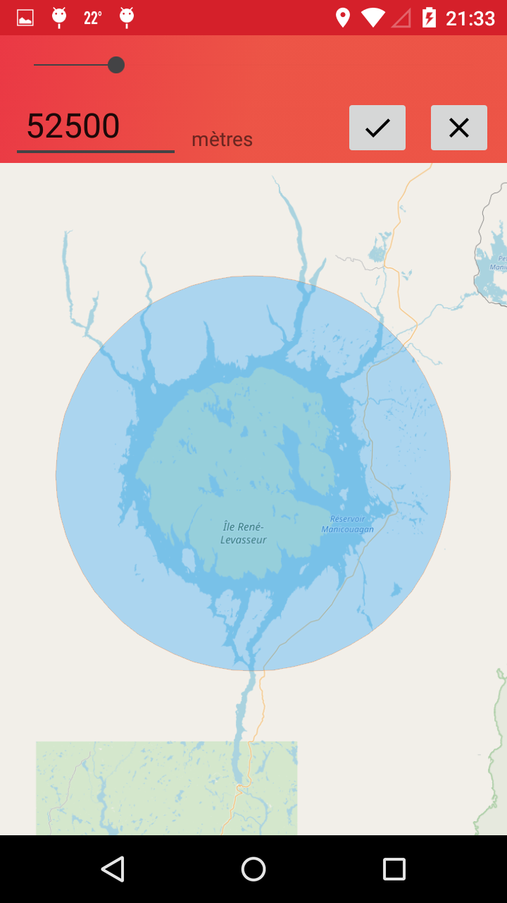
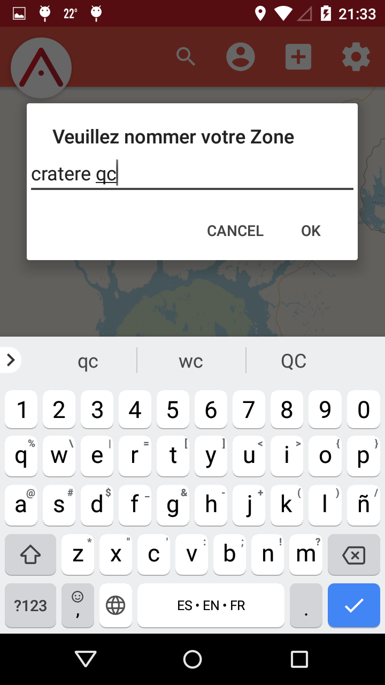
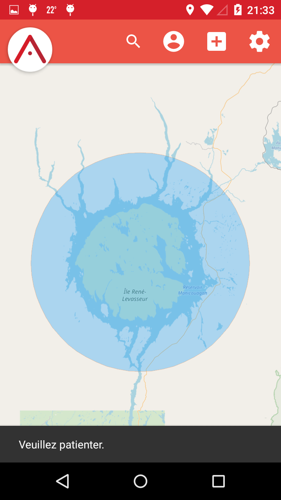
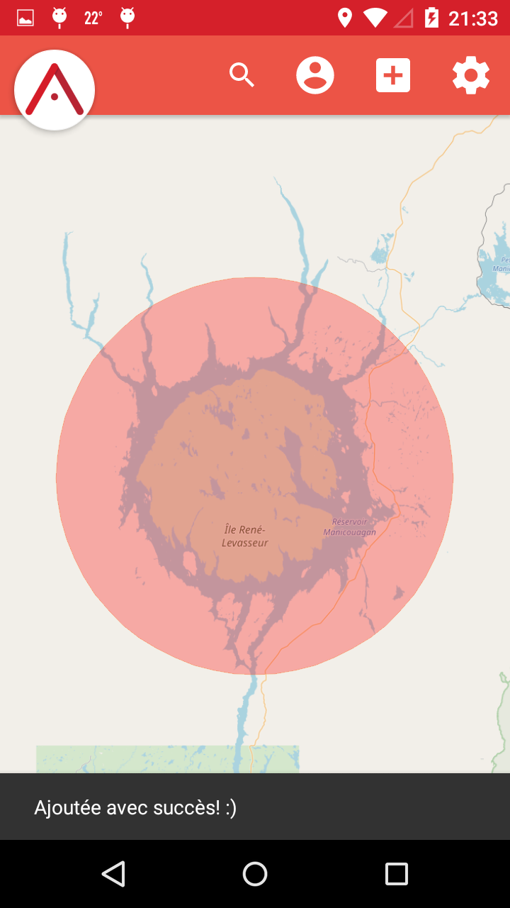
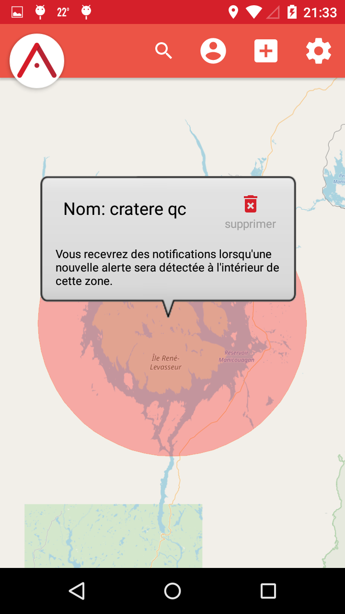
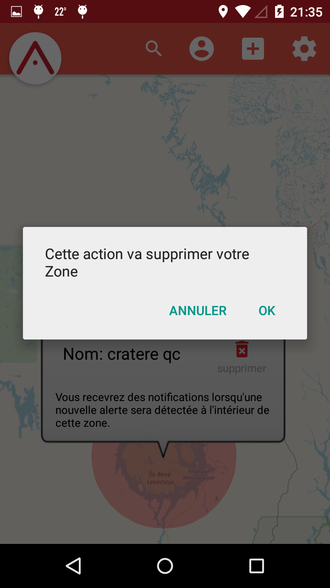
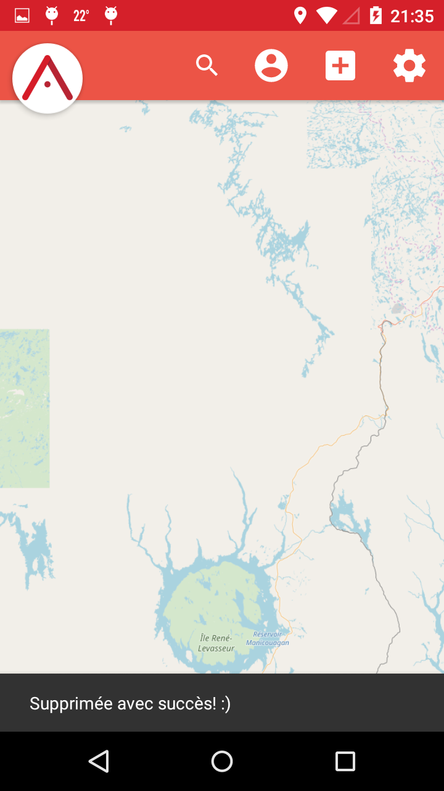

[Serveur] Aide pour faire passer le temps de réponse pour une requête de "POST MonitoredZone" de 8 secondes à 1 seconde.
[WebApp] Ajouts de catégories connues supplémentaires pour la classification d'alertes.
[WebApp] Suite à l'inversion des coordonnées au niveau de l'API, il a fallu inverser les coordonnées au niveau de la WebApp: de (Lat,Lng) à (Lng,Lat).
[Android] Nouvelle technique de récupération de la localisation GPS.
[Android] Intégration du filtre de Préférence en lien avec la location GPS: l'utilisateur peut désormais refuser l'utilisation de ces données à l'application (même si la permission avait été accordée préalablement à l'application).
[Android] Sauvegarde de la dernière localisation GPS en mémoire interne et récupération de celle-ci en cas d'absense de GPS pour centrer la carte sur un endroit connu de l'utilisateur.
[Android] La position GPS actuelle de l'utilisateur est désormais affichée sur la carte (s'il le désire/le permet).
[Android] L'utilisateur peut désormais choisir son "username" lors de la création de son compte.
[Android] Retouches sur le design (UI) de l'authentification: désormais plus uniforme et intuitif (plus de bouton "Retour", complètement en français, couleur uniforme des boutons, feedback pour l'utilisateur en cas d'erreurs, etc.).
[Android] Mise-à-jour de certaines librairies utilisése.
[Android] Intégration complète des Zones Surveillées de forme Circulaire.
[Android] Création d'un "Aperçu en directe" pour la sélection de la grosseur du rayon pour les Zones Surveillées Circulaires.
[Android] Intégration complète de la mise-à-jour des "registrationToken" en fonction des "log in" et "log out".
[Android] Intégration du "POST User" pour l'authentification avec Google.
[Android] Intégration de l'outil "Crashlitics" qui permet de récolter des données sur les crashs occasionnés dans l'application (permet une meilleure maintenance).
[Android] Intégration de l'option de supprimer toutes ses Zones Surveillées d'un coup.
Semaine 20 août
[WebApp] Refactor de certaines parties du code et ajout de commentaires.
[WebApp] Fix de certains bugs en lien avec l'affichage des bons icônes dans le menu de gauche.
[WebApp] Intégration de l'arrangement automatique du "Zoom Level" sur la map lors des recherches de localisation.
[WebApp] Intégration des filtres complétée (menu de gauche).
[Serveur] Intégration de l'utilisation du Google API (Admin SDK) pour envoyer les notifications.
[Serveur] Retravaille du code d'envoie des notifications.
[Serveur] Petit correctif sur un JUnit Test en lien avec Firebase.
[Android] Refactor dans MainActivity.
[Android] Début de travail sur une manière de synchroniser l'information du téléphone en local avec celle offerte par le Serveur.
[Android] Intégration du "POST Zone Surveillée".
[Android] Début d'intégration de la sauvegarde et récupération des Zones Surveillées dans la mémoire interne.
[Android] Nouvelle intégration des Préférences des utilisateurs.
[Android] Intégration des requêtes "POST User" au flow de l'authentification par Email (de même pour son "GET User" en cas de SignIn).
[Android] Avancement au niveau de la gestion des notifications une fois reçus et cliqués.
[Android] Adaptation du Manifest pour que la visualisation ne se fasse qu'en mode "Portrait"
[Android] Fix du bug qui ralentissait le développement ("Clean Project" devait être effectué avant chaque test).
Semaine 13 août
[WebApp] Changement des URL des requêtes à l'API et adaptation de Angular pour que celles-ci demande des réponses en format JSON.
[WebApp] Ajout des descriptions des alertes d'usagers dans les infobulles.
[Android] Rajout d'animations pour enrichir l'expérience des utilisateurs et rendre certaines fonctionalités plus évidentes.
[Android] Fix du crash occasionné par la demande de permission d'utiliser la Localisation GPS pour les API_Level 24+.
[Android] Implémentation de la méthode concrète permettant de receuillir le idToken à envoyer au serveur pour une requête authentifiée.
[Android] Refactoring pour les convention du nommage des packages.
[Android] Mise-à-jour de certaines librairies utilisées par l'application (dans le build.gradle).
Semaine 23 juillet
[Serveur] Meilleure séparation entre l'appel de Spring et les démonstrations (utilisation de l'Admin SDK pour la vérification des JWT et les envoie de notifications).
[Android] Travail sur le UI: ajout d'éléments visuels pour orienter l'utilisateur, en plus de rendre l'expérience plus riche.
[Design] Création des artefacts pour générer le Logo de l'application Android.
[Analyse] Mise-à-jour du diagramme d'Activité pour les requêtes au serveur: il y avait un oubli par rapport aux requêtes qui peuvent bel et bien exister sans authentification (une requête tel que la demande des alertes, tout simplement).
[Général] Lecture par rapport aux limites en lien avec le nombre de librairies importées par projet.
[Général] Au lieu d'écrire "Backend", je vais désormais classer ces progrès comme étant au niveau "Serveur".

Semaine 16 juillet
Glossaire:
Firebase: Ensemble de services offerts par Google pour les développeurs.
Admin SDK: Permet l'accès à certaines fonctionnalités d'un API de Firebase (modifier le mot-de-passe d'un usager de la base de données d'authentification, par exemple). Authentifie l'application faisant les requêtes. L'intégration de l'Admin SDK doit se faire en privé (elle nécessite dans le code de l'information sensible que le public ne doit pas connaître).
FCM: Firebase Cloud Messaging. Service facilitant l'envoie de Notifications à des appareils mobiles.
registrationToken: Chaque appareil mobile unique ayant téléchargé l'application reçoit un 'registrationToken' unique. C'est ce token que l'on doit utiliser pour envoyer des notifications avec FCM.
OAuth 2: Méthode d'authentification qui permet à un usager de s'authentifier sans nécessairement envoyer ses données sensibles (tel que son mot-de-passe) au serveur auquel il fait une requête.
idToken: C'est le token utilisé par le protocole OAuth 2 pour authentifier la requête d'un usager (la requête est envoyée avec ce token).
JWT: JSON Web Token. C'est un JSON encodé en base 64. Il possède la forme "XXX.YYY.ZZZ", où XXX est le 'header', YYY le 'payload' et ZZZ la 'signature'. Dans le cas de l'authentification via Firebase (où l'idToken est un JWT), le 'header' contient une clé publique de Google ainsi que l'algo utilisé pour la signature (soit RSA 256 bits, ou "RS256"), le 'payload' contient les informations en lien avec l'usager qui fait la requête (email, UID, etc.), et la 'signature' permet d'authentifier la requête.
UID: Chaîne de caractère unique assignée à tout utilisateur s'authentifiant via Firebase à une application.
Progrès:
[Android] Intégration de "Google SignIn" et "Acclimate (Email/Password) SignIn" complétée via Firebase. OAuth 2 est donc intégré à l'application. Le fruit de plusieurs jours de travail!
[Android] Plusieurs heures passées à peaufiner le "activity_firebase.xml" (AuthUI) et le code lui étant relié pour permettre une meilleure expérience.
[Android]Clean up du code laissé derrière par certaines expérimentations liées aux tests d'intégration de méthode d'authentification.
[Android] Début d'un travail de Refactoring pour mieux séparer le code de l'Authentification: idéalement, chaque méthode de SignIn serait une Interface?
[Android] Meilleur set up du "Firebase Console" et intégration des 2 autres admins du projet (invitation envoyée).
[Android] Migration du projet Android sur BitBucket pour commencer à séparer les différentes branches du projet en différents 'repo'. Va permettre une synchronisation plus efficace des projets individuels puisqu'on n'aura pas de problèmes de "Merge/Pull" lorsqu'un projet n'étant pas relié au notre a été mis à jour (par exemple, le Backend vs Android).
[Android] Suite à l'intégration du traitement Spring sur les JSON (par Olivier), j'ai retravaillé sur l'option de recherche d'adresse/location dans la carte. Cette option fonctionne désormais parfaitement.
[Android] Refactor du code des méthodes "@Override onCreate" du package "MainActivities": simple déplacement de certaines sections dans des procédures privées afin de rendre le tout plus lisible.
[Android] Début de travail sur la localisation GPS afin d'obtenir le plus rapidement possible la position de l'usager afin de pouvoir savoir où centrer la Map avant même que celui-ci n'y accède (présentement, on centre toujours sur Montréal).
[Android] Importation de la librairie "Picasso" pour mieux traiter les images provenant d'une URI associée à un ImageView.
[Design] Création d'un mini logo (24px) pour les ImageButton concernant Acclimate.
[Design] Design du UI de base pour l'authentification.
[Backend] Set up d'un Robot Moniteur pour commencer la migration du serveur en backend.
[Backend] Intégration des notifications (utilise une liste de "registrationToken", qui chacun représente un appareil mobile)! (Plusieurs heures de recherche et information pour réussir cela.)
[Backend] Intégration de la vérification de la signature des JWT (JSON Web Token) ainsi que de l'extraction des UID (ID unique associé à chaque utilisateur s'étant authentifié au moins une fois dans l'application). Les requêtes faites au serveur peuvent donc désormais être guaranties authentiques et intègre.
[Général] Explication sommaire du système de "Tokens" de l'authentification par OAuth 2 aux membres de l'équipe.
[Sécurité] Vu la nécessité de traiter de vérifier des signatures électroniques, il va falloir conserver un "secret" ou une "clé privée" quelque part dans le code du Backend. Ceci pose un problème de sécurité et j'ai donc proposé qu'on migre le Backend de GitHub vers BitBucket puisque ce dernier offre des 'repos' privés gratuitement (alors que GitHub ne nous permet de faire cela présentement que parce que nous sommes étudiants).
[Sécurité] Selon mes recherches, l'unique faille de OAuth 2 est la possiblité du "replay attack". Il faudra trouver une manière d'intégrer un ID unique sur les requêtes, ou bien de s'assurer que le TimeStamp de création d'un idToken traité ne dépasse pas une certaine fenêtre de temps.
[Lecture] Lecture sur la manière de cacher de l'information sensible dans le code du Backend. Quelques options s'offrent, mais il faut faire attention au "reverse engineering". J'approfondierai mes connaissances là-dessus au moment où on intégrera ces String dans le Backend.
[Lecture] Lecture sur la manière de passer et interpréter les "idToken" générés par l'authentification d'OAuth 2.
[Lecture] Lecture sur les différentes options qui s'offrent pour les notifications. Le problème actuel est la décision par rapport au "minSDK": il existe beaucoup de features intéressants pour les versions plus récentes d'Android, mais nous ne voudrions pas exclure une grande part du marché juste pour cela.
[Analyse] Création de diagrammes d'activité pour le flow de l'authentification, d'une requête au serveur, et de l'ajout d'une Monitored Zone.
[Analyse] Proposition d'une organisation de la structure de la Base de Données afin de permettre le déploiement plus efficace des notifications. Idée: semblable à un filtre de Bloom (mais sans hachage nécessaire), nous allons probablement utiliser des "tuiles" et classifier les Monitored Zones de chaque usager en fonction de quelles tuiles celles-ci touchent. Ainsi, lorsque le serveur va se demander à qui envoyer une notification, il y aura un tri plus rapide des options à considérer en fonction de dans quelle tuile se situe la Pin causerait l'envoie de notifications.
Screenshots/Diagrammes:
Semaine 9 juillet
[WebApp] Changement du default_pin de "Feu" à "Météo"
[Général] Le robot moniteur vérifie désormais toutes les 5 minutes
Semaine 2 juillet
[Android] Plusieurs heures de recherches pour tenter d'intégrer un système d'authentification indépendant. (Considération d'implémentation manuelle, FireBase, Google SignIn et Spring OAuth.)
[Android] Recherche sur, et intégration des SharedPreference pour sauvegarder dans la mémoire interne certaines choses (les zones d'abonnements et les filtres, pour l'instant).
[Android] Refactor du code à plusieurs endroits. Certaines classes sont 25% plus courtes.
[Android] Réorganisation des classes dans des packages afin d'avoir une meilleure séparation.
[Android] Découverte et fix du bug qui empêchait d'utiliser InstantRun d'Android Studio: la vitesse de chargement pour des tests est désormais largement plus rapide.
[Android] Intégration d'une Activité de "Settings". Présentement encore incertain de son utilisation précise dans le futur.
[Android] Début du renommement du package du projet pour passer de "simpleTestApp" à "Acclimate".
[Android] Intégration des User Pins, pour les différencier des Pins officielles.
[Android] Localisation GPS intégrée. Fonctionne hors-ligne et en mode avion.
[Android] Intégration des "Marker Clusters" pour les bases de données statiques (les Pins dites "historiques") afin de réduire le lag lors du visionnement.
[Android] Intégration de plusieurs Threads: la Home Page fetch désormais les données en parallèle ce qui permet une initialisation plus rapide de l'app. De même pour le fetch des Pins historiques.
[WebApp] Corrections de certaines erreurs sur la classification des Pins.
[WebApp] Retouche sur les User Pins afin d'avoir une taille uniformisée.
[Backend] Commencement de l'intégration de QuartzScheduler au niveau du Server.
[Général] Mise en place d'un "robot moniteur" qui permet de garder le serveur ainsi que la WebApp toujours actifs (https://uptimerobot.com/).
Semaine 25 juin
Fin des examens intras. Rencontre avec l'équipe. J'ai retouché le site web (WebApp) pour corriger certaines erreurs d'interprétation des types de PIN et aussi pour intégrer les USER PIN. Il reste à décider de la grosseur de ces pins (sera fait plus tard).
Semaine du 4 juin
Recherches par rapport aux connections sécurisées: confirmation que la connection établie par l'application est sécurisée
en utilisant les protocoles du HTTPS (TLS/SSL). L'envoie d'informations sensibles (username+password bundle) via l'URL ne devrait
donc pas être une brèche de sécurité: seul le nom de domaine ne sera pas encrypté. Ce sera donc fort probablement
l'approche utilisée pour l'enregistrement et l'identification des usagers.
Lecture par rapport aux Notifications, Data Storage, et Account Management System.
Semaine du 21 mai
Création du site web de l'équipe (affichage dynamique: accessible par téléphone cellulaire), organisation du GitHub en conséquence (nouveau dossier spécifique au site web pour ce cours), création du patron pour les pages individuelles des membres de l'équipe.
Design pour différencier les Pins des alertes déclarées par des utilisateurs de celles provenant de BDD officielles (gouvernement).
Semaine du 14 mai
Rencontre d'équipe pour revisiter les progrès réalisés et élaborer un Plan de Travail qui définit un peu mieux les objectifs, la répartition des tâches et le découpage des concepts.
Semaine du 30 avril
Recherche sur la manière de programmer des applications Android.
Brainstorm sur le concept du logiciel et la répartition des tâches.
Participation au Hackhaton "HackQc 2018" sur les Données Ouvertes. Premier jet de prototype de Acclimate (qui a remporté la 3e place).
Contributions personnelles (durant le Hackathon):
Quelques décisions sur le design (police utilisée dans le logo, ajout de texte indicateur sous le logo de la carte sur l'Activity d'accueil, etc.).
Contribution pour le Parsing de la BDD « Historique ».
Apprentissage sur le fonctionnement des applications Android et leur développement.
Création du patron des Activities de l'application.
Implémentation du design proposé par Charles-Philippe Lepage dans le Frontend de l'application (travail avec les fichiers XML et le Manifest).
Implémentations mineures reliées au Backend (filtres d'affichage sur la carte, intégration d'un champ de recherche, affichage dans la page d'accueil du nombre de chaque alertes en fonction de leur type).

 
      